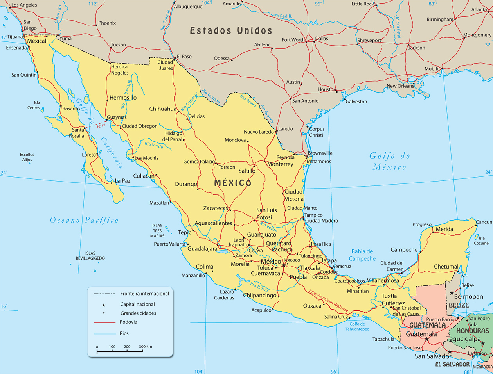

Informações Gerais sobre o México
O México é um país localizado na América do Norte, conhecido por sua cultura vibrante, culinária rica, belezas naturais e herança histórica impressionante. Com uma população diversa e paisagens que vão de praias tropicais a desertos, o México é uma nação de contrastes e tradições.
Dados Principais
| Bandeira |  |
|---|---|
| Capital | Cidade do México |
| População | Mais de 126 milhões de habitantes |
| Região | América do Norte |
| Idioma Oficial | Espanhol |
| Área Territorial | 1.964.375 km² |
| Moeda | Peso Mexicano (MXN) |
Posição Geográfica
O México faz fronteira ao norte com os Estados Unidos e ao sul com Guatemala e Belize. Seu território inclui planícies costeiras, cadeias montanhosas, desertos e selvas tropicais.
Curiosidades
- O México abriga 35 Patrimônios Mundiais da UNESCO.
- É o lar da civilização Maia e Asteca.
- A Cidade do México está entre as maiores metrópoles do mundo.
- É o berço de artistas renomados como Frida Kahlo e Diego Rivera.